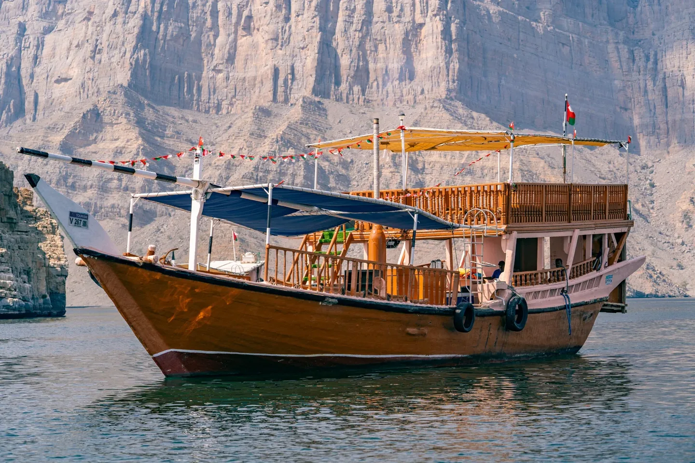
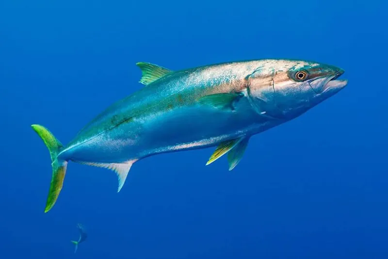
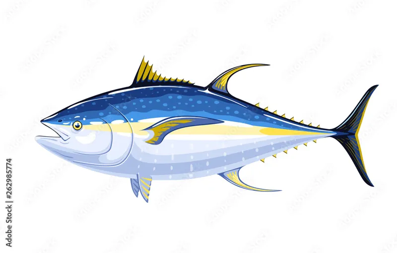
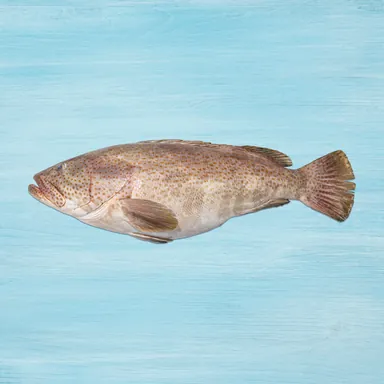
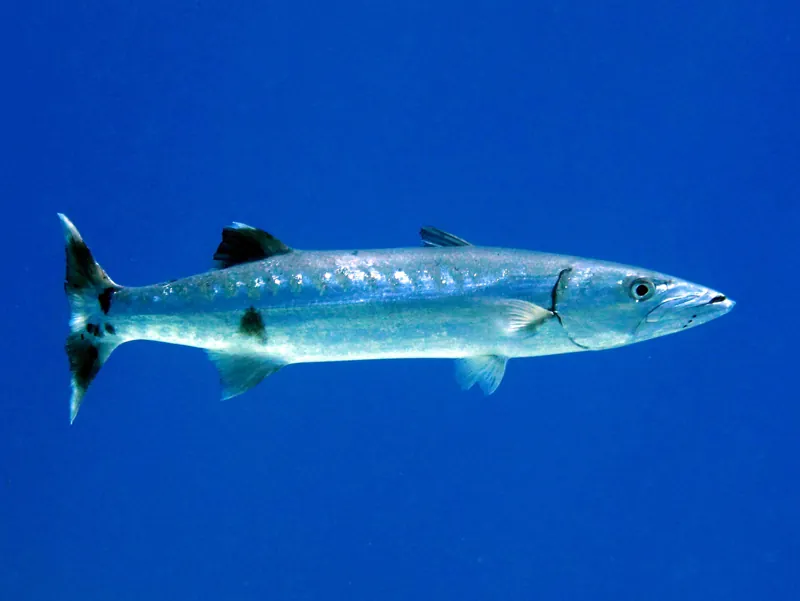
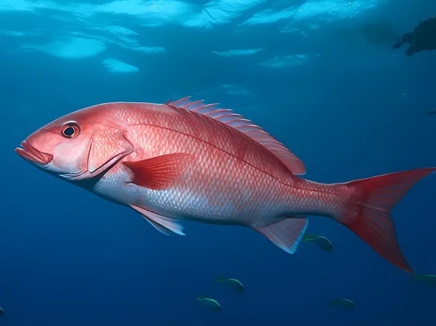
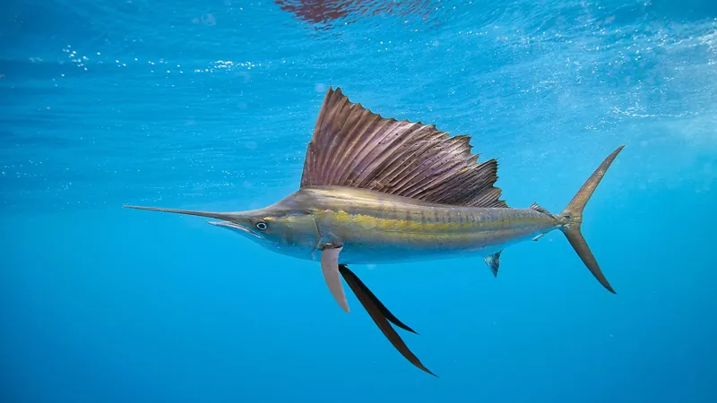
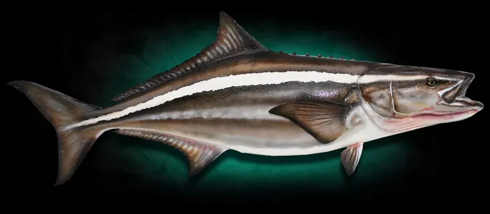
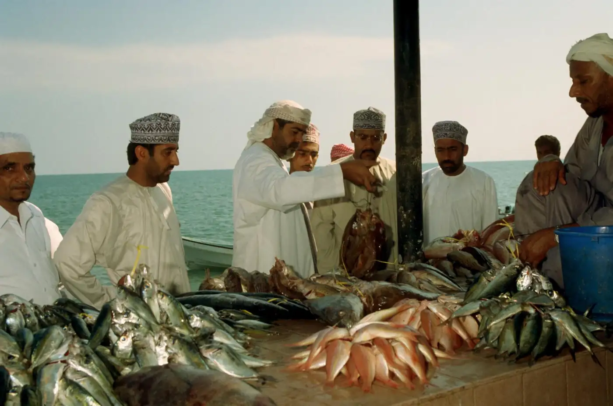

Local thermoclines
Summer upwelling in Dhofar creates temperature layers that drive baitfish — a pattern global models simply ignore. We model the Omani water column.

BAHHAR turns live oceanographic, tidal and species data into a single answer — the best bite window and the best spot, tuned for Omani waters.
From the fjords of Musandam to the monsoon coast of Dhofar — 3,165 km of coastline, modelled.
We'll notify you at launch. No spam, ever.
Photograph: traditional boats over the shallows of Khore Dhawas, Muscat
BAHHAR is architected from the ground up for the Arabian Sea and Gulf of Oman — not a global model with a flag pasted on.
Summer upwelling in Dhofar creates temperature layers that drive baitfish — a pattern global models simply ignore. We model the Omani water column.
Kingfish (كنعد) and Hammour (هامور) behave differently in the Arabian Sea than in the Red Sea. Our forecasts are trained on Omani ecosystems.
Protected areas like the Daymaniyat Islands require permits. BAHHAR geofences boundaries and surfaces the relevant royal decree before you cast.
A four-step wizard builds a complete, weather-safe plan around your vessel, fuel and target species — then hands you the ideal launch window.
Custom bathymetric charts show drop-offs, protected-reserve boundaries and colour-coded probability markers — computed from real Omani waters, not a debug grid.
Log catches with photos, GPS and the exact conditions that produced them. Over a season, BAHHAR turns your logbook into personal bite analytics.
Sea temperature, wave height, wind, tide state and solunar pressure collapse into a single opportunity score, refreshed constantly so the number you launch against is the number you sail with.
BAHHAR carries your fishing licence, vessel registration and reserve permits on the device with their expiry dates attached, so a coastguard inspection becomes a two-second job even at anchor.
A checklist built around Omani conditions rather than generic boating advice, with your crew manifest and vessel details carried across every trip and emergency numbers one tap away.
From Musandam's kingfish to Dhofar's tuna — each with its own forecast model and a photo of the real animal.
Photograph: the Daymaniyat shallows from above

Kingfishكنعد (Kanaad)
Yellowfin Tunaثمد (Thamad)
Hammourهامور (Hammour)Hammour is the Omani name for grouper, not a second species, so this grid was counting one reef fish twice. Names here follow BAHHAR’s own species catalogue; where an Omani common name is still being checked with local speakers, the grid prints the scientific name rather than guess.

Barracudaالقد (Qid)
SnapperLutjanus
Sailfishالشراع (Shira')
Cobiaكوبيا (Cobia)
Join the waitlist and be among the first Omani fishermen to fish smarter with BAHHAR at launch.
Get Early Access